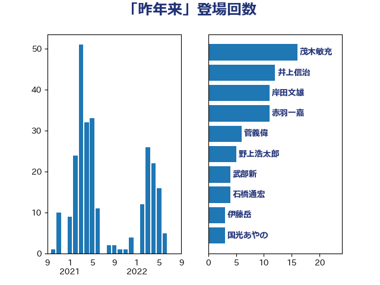

単語「昨年来」

| 茂木敏充 | 自由民主党 | 16 回 |
| 井上信治 | 自由民主党 | 12 回 |
| 岸田文雄 | 自由民主党 | 11 回 |
| 赤羽一嘉 | 公明党 | 11 回 |
| 菅義偉 | 自由民主党 | 6 回 |
| 野上浩太郎 | 自由民主党 | 5 回 |
| 武部新 | 自由民主党 | 4 回 |
| 石橋通宏 | 立憲民主党 | 4 回 |
| 伊藤岳 | 日本共産党 | 3 回 |
| 国光あやの | 自由民主党 | 3 回 |
| 梶山弘志 | 自由民主党 | 3 回 |
| 田村まみ | 国民民主党 | 3 回 |
| 赤池誠章 | 自由民主党 | 3 回 |
| 里見隆治 | 公明党 | 3 回 |
| 金子恭之 | 自由民主党 | 3 回 |
| 階猛 | 立憲民主党 | 3 回 |
| 上川陽子 | 自由民主党 | 2 回 |
| 中村裕之 | 自由民主党 | 2 回 |
| 中野洋昌 | 公明党 | 2 回 |
| 佐藤英道 | 公明党 | 2 回 |
| 勝部賢志 | 立憲民主党 | 2 回 |
| 岸信夫 | 自由民主党 | 2 回 |
| 川田龍平 | 立憲民主党 | 2 回 |
| 平木大作 | 公明党 | 2 回 |
| 新藤義孝 | 自由民主党 | 2 回 |
| 紙智子 | 日本共産党 | 2 回 |
| 萩生田光一 | 自由民主党 | 2 回 |
| 西村康稔 | 自由民主党 | 2 回 |
| 足立康史 | 日本維新の会 | 2 回 |
| 高橋千鶴子 | 日本共産党 | 2 回 |
| こやり隆史 | 自由民主党 | 1 回 |
| たがや亮 | れいわ新選組 | 1 回 |
| 三浦信祐 | 公明党 | 1 回 |
| 中山展宏 | 自由民主党 | 1 回 |
| 中川貴元 | 自由民主党 | 1 回 |
| 中西健治 | 自由民主党 | 1 回 |
| 丸川珠代 | 自由民主党 | 1 回 |
| 二階俊博 | 自由民主党 | 1 回 |
| 井上英孝 | 日本維新の会 | 1 回 |
| 伊波洋一 | 無所属 | 1 回 |
| 佐藤茂樹 | 公明党 | 1 回 |
| 務台俊介 | 自由民主党 | 1 回 |
| 古屋範子 | 公明党 | 1 回 |
| 古川元久 | 国民民主党 | 1 回 |
| 吉田統彦 | 立憲民主党 | 1 回 |
| 坂本哲志 | 自由民主党 | 1 回 |
| 塩川鉄也 | 日本共産党 | 1 回 |
| 奥野総一郎 | 立憲民主党 | 1 回 |
| 宮崎雅夫 | 自由民主党 | 1 回 |
| 小宮山泰子 | 立憲民主党 | 1 回 |
| 小川淳也 | 立憲民主党 | 1 回 |
| 小林鷹之 | 自由民主党 | 1 回 |
| 小沢雅仁 | 立憲民主党 | 1 回 |
| 山口晋 | 自由民主党 | 1 回 |
| 岸真紀子 | 立憲民主党 | 1 回 |
| 打越さく良 | 立憲民主党 | 1 回 |
| 斉藤鉄夫 | 公明党 | 1 回 |
| 斎藤アレックス | 国民民主党 | 1 回 |
| 早稲田ゆき | 立憲民主党 | 1 回 |
| 杉久武 | 公明党 | 1 回 |
| 杉本和巳 | 日本維新の会 | 1 回 |
| 村井英樹 | 自由民主党 | 1 回 |
| 松沢成文 | 日本維新の会 | 1 回 |
| 林芳正 | 自由民主党 | 1 回 |
| 柚木道義 | 立憲民主党 | 1 回 |
| 榛葉賀津也 | 国民民主党 | 1 回 |
| 橋本岳 | 自由民主党 | 1 回 |
| 河野義博 | 公明党 | 1 回 |
| 牧山ひろえ | 立憲民主党 | 1 回 |
| 玉木雄一郎 | 国民民主党 | 1 回 |
| 田村貴昭 | 日本共産党 | 1 回 |
| 田畑裕明 | 自由民主党 | 1 回 |
| 盛山正仁 | 自由民主党 | 1 回 |
| 石井啓一 | 公明党 | 1 回 |
| 石川博崇 | 公明党 | 1 回 |
| 神田憲次 | 自由民主党 | 1 回 |
| 秋野公造 | 公明党 | 1 回 |
| 稲富修二 | 立憲民主党 | 1 回 |
| 竹内真二 | 公明党 | 1 回 |
| 竹内譲 | 公明党 | 1 回 |
| 竹谷とし子 | 公明党 | 1 回 |
| 羽田次郎 | 立憲民主党 | 1 回 |
| 自見はなこ | 自由民主党 | 1 回 |
| 舞立昇治 | 自由民主党 | 1 回 |
| 芳賀道也 | 国民民主党 | 1 回 |
| 藤岡隆雄 | 立憲民主党 | 1 回 |
| 西田実仁 | 公明党 | 1 回 |
| 赤嶺政賢 | 日本共産党 | 1 回 |
| 逢坂誠二 | 立憲民主党 | 1 回 |
| 重徳和彦 | 立憲民主党 | 1 回 |
| 野間健 | 立憲民主党 | 1 回 |
| 長坂康正 | 自由民主党 | 1 回 |
| 青柳陽一郎 | 立憲民主党 | 1 回 |
| 須藤元気 | 無所属 | 1 回 |
| 高木啓 | 自由民主党 | 1 回 |
| 高橋光男 | 公明党 | 1 回 |
| 鳩山二郎 | 自由民主党 | 1 回 |